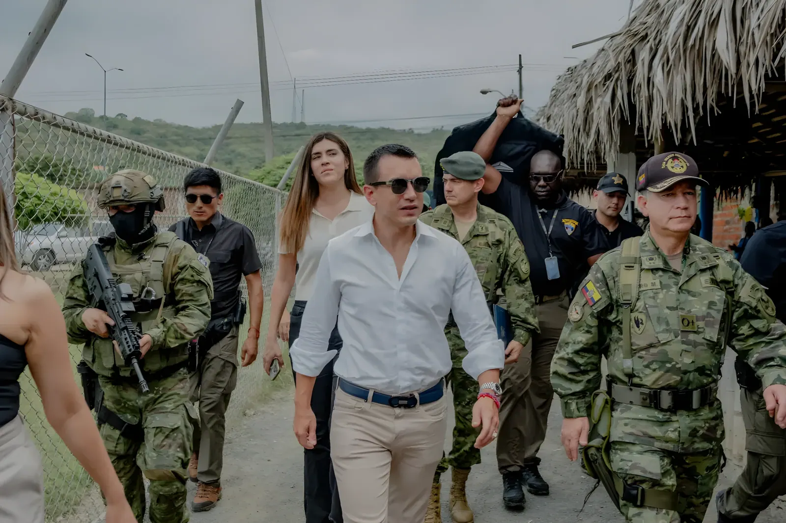

Élu en 2023 à seulement 35 ans, Daniel Noboa a hérité d'un Équateur gangréné par une violence criminelle sans précédent. Sa réponse — l'état de « conflit armé interne » et la militarisation des prisons — a fait de lui une figure emblématique de la sécurité dure en Amérique latine. Mais entre résultats tangibles et dérives sécuritaires, le bilan reste ouvert.
Lorsque Daniel Noboa prête serment le 23 novembre 2023, l'Équateur a sombré en quelques années dans une spirale de violence inédite. Pays traditionnellement épargné par les conflits armés de ses voisins colombien et péruvien, il est devenu un carrefour stratégique du trafic de cocaïne à destination de l'Europe et des États-Unis. Le port de Guayaquil, deuxième ville du pays, est tombé sous l'influence de cartels locaux — Los Lobos, Los Choneros, R7 — eux-mêmes liés aux grandes organisations mexicaines (Sinaloa, CJNG) et albanaises.
Le tournant symbolique survient en août 2023 : le candidat à la présidentielle Fernando Villavicencio, journaliste d'investigation réputé pour ses enquêtes sur les narcos, est assassiné en plein meeting électoral à Quito. Cet événement traumatique cristallise la crise sécuritaire et propulse la question de la violence au cœur de la campagne électorale.
Le 9 janvier 2024, l'Équateur bascule dans une crise d'une rare intensité. Des groupes armés coordonnent simultanément des attaques contre des commissariats, des medias télévisées en direct (la chaîne TC Televisión est envahie en direct à l'antenne), et des infrastructures critiques. Des explosifs artisanaux sont détonnés dans plusieurs villes. En réponse, Noboa déclare l'état d'« urgence nationale » et, surtout, qualifie officiellement 22 organisations criminelles de terroristes belligérants, ouvrant la voie à l'intervention de l'armée.
Cette déclaration est politiquement et juridiquement audacieuse : en assimilant les cartels à des acteurs de guerre, elle permet de déployer les forces armées hors des procédures pénales ordinaires. Des opérations militaires sont menées dans les prisons, longtemps contrôlées par les gangs, et dans les quartiers à haute criminalité de Guayaquil et de Durán. Des milliers de détenus sont transférés vers une prison de haute sécurité construite en urgence.
Assassinat du candidat Fernando Villavicencio à Quito. Cristallisation de la crise sécuritaire. Noboa remporte l'élection anticipée en promettant la main de fer.
« Noche del terror » : attaques coordonnées de gangs armés contre des commissariats, des prisons et des studios de TV en direct. Noboa déclare le conflit armé interne.
Opérations militaires dans les prisons. Transfert massif de détenus. Déploiement de 22 000 soldats dans les rues. Premières baisses du taux d'homicides enregistrées.
Referendum : les Équatoriens approuvent à plus de 75 % les mesures sécuritaires de Noboa, dont l'extradition de ressortissants et la militarisation des prisons.
Réélection de Noboa au 1er tour avec 57 % des voix contre Luisa González (Correísmo). Validation massive de sa politique sécuritaire par les urnes.
Poursuite des opérations. Tension avec le Mexique après des déclarations sur les cartels. Coopération renforcée avec les États-Unis. Pressions persistantes des droits de l'homme.
Le bilan chiffré de la politique Noboa est contrasté mais réel. Le taux d'homicides, qui avait atteint le pic historique de 46,5 pour 100 000 habitants en 2023 — l'un des plus élevés d'Amérique latine —, a amorcé une baisse significative dès 2024, estimée entre 25 et 35 % selon les sources. Guayaquil, épicentre de la violence, a vu certains de ses quartiers les plus dangereux reprendre un semblant de normalité.
| Indicateur | 2023 (pic) | 2025 (estimation) |
|---|---|---|
| Homicides / 100 000 hab. | 46,5 | ~28–32 |
| Prisons sous ctrl militaire | 0 | 36 (toutes) |
| Saisies de cocaïne (tonnes) | ~200 t | >300 t (record) |
| Soldats déployés | — | ~22 000 |
| Groupes neutralisés (leaders) | — | >40 arrestations clés |
L'affaire la plus retentissante intervient en avril 2024 : les forces de l'ordre équatoriennes font irruption de force dans l'ambassade du Mexique à Quito pour arrêter l'ex-vice-président Jorge Glas, réfugié diplomatique. Cet acte constitue une violation flagrante de la Convention de Vienne. Le Mexique rompt immédiatement ses relations diplomatiques avec l'Équateur, provoquant une crise internationale majeure et une condamnation quasi-unanime de la communauté internationale — y compris de partenaires habituels de Quito.
Noboa assume la décision au nom de la lutte contre l'impunité, mais l'épisode révèle la tension entre l'efficacité revendiquée et le respect du droit international. L'Équateur est traduit devant la Cour internationale de justice par le Mexique.
« Nous n'avons pas peur. Nous allons gagner cette guerre. »
— Daniel Noboa, discours à la nation, janvier 2024« On ne peut pas régler vingt ans de corruption avec six mois d'armée dans les rues. »
— Ana Pesántez, juriste et ancienne procureure générale d'Équateur, 2024La réélection de Noboa en février 2025, dès le premier tour avec 57 % des suffrages, valide politiquement sa stratégie. Les Équatoriens, épuisés par des années de violence, ont massivement choisi la continuité sécuritaire face à la candidate correíste Luisa González. Son second mandat (2025–2029) s'ouvre avec la volonté de consolider les acquis, d'approfondir la coopération avec les États-Unis et de relancer une économie affectée par l'instabilité.
La guerre de Noboa contre les narcos restera comme un tournant dans l'histoire contemporaine de l'Équateur. Elle a démontré qu'une réponse sécuritaire dure pouvait enrayer — au moins temporairement — une spirale de violence qui semblait hors de contrôle. Mais elle a aussi mis à nu les failles structurelles d'un État dont les institutions judiciaires et policières restent fragiles. L'Équateur de 2026 est un pays qui a repris pied, sans pour autant avoir résolu les équations profondes du narco-capitalisme andin. L'avenir du pays se joue désormais dans sa capacité à convertir l'ordre militaire en gouvernance durable.
Elegido en 2023 con apenas 35 años, Daniel Noboa heredó un Ecuador devastado por una violencia criminal sin precedentes. Su respuesta — la declaración de «conflicto armado interno» y la militarización de las cárceles — lo convirtió en un referente de la mano dura en América Latina. Entre resultados tangibles y derivas autoritarias, el balance sigue abierto.
Cuando Daniel Noboa asume el cargo el 23 de noviembre de 2023, Ecuador ha caído en pocos años en una espiral de violencia inédita. País tradicionalmente ajeno a los conflictos armados de sus vecinos colombiano y peruano, se ha convertido en un corredor estratégico del tráfico de cocaína hacia Europa y Estados Unidos. El puerto de Guayaquil, segunda ciudad del país, ha caído bajo la influencia de carteles locales — Los Lobos, Los Choneros, R7 — a su vez vinculados a las grandes organizaciones mexicanas (Sinaloa, CJNG) y albanesas.
El punto de inflexión simbólico llega en agosto de 2023: el candidato presidencial Fernando Villavicencio, periodista de investigación conocido por sus reportajes sobre los narcos, es asesinado en pleno mitin electoral en Quito. Este trauma cristaliza la crisis de seguridad y sitúa la violencia en el centro de la campaña electoral.
El 9 de enero de 2024, Ecuador vive una crisis de una intensidad excepcional. Grupos armados coordinan simultáneamente ataques contra comisarías, medios de comunicación en directo (la cadena TC Televisión es tomada por hombres armados en antena) e infraestructuras críticas. En respuesta, Noboa declara el estado de «emergencia nacional» y, sobre todo, califica oficialmente a 22 organizaciones criminales como terroristas beligerantes, abriendo la puerta a la intervención del ejército.
Esta declaración es políticamente arriesgada: al asimilar a los carteles con actores bélicos, permite desplegar a las fuerzas armadas fuera de los procedimientos penales ordinarios. Se llevan a cabo operaciones militares en las cárceles — durante mucho tiempo controladas por las bandas — y en los barrios de alta criminalidad de Guayaquil y Durán.
Asesinato del candidato Fernando Villavicencio en Quito. Cristalización de la crisis. Noboa gana las elecciones anticipadas prometiendo mano dura.
«Noche del terror»: ataques coordinados de bandas armadas en comisarías, cárceles y estudios de TV en directo. Noboa declara el conflicto armado interno.
Operaciones militares en cárceles. Traslado masivo de reclusos. Despliegue de 22 000 soldados. Primeras caídas en la tasa de homicidios.
Referéndum: más del 75 % de los ecuatorianos aprueban las medidas de Noboa, incluida la extradición y la militarización de las cárceles.
Reelección de Noboa en primera vuelta con el 57 % frente a Luisa González. Validación masiva de su política de seguridad en las urnas.
Continuación de las operaciones. Tensión con México. Cooperación reforzada con EE. UU. Presiones persistentes de organizaciones de derechos humanos.
El balance cifrado de la política de Noboa es contrastado pero real. La tasa de homicidios, que había alcanzado el récord histórico de 46,5 por 100 000 habitantes en 2023, inició una caída significativa en 2024, estimada entre el 25 y el 35 % según las fuentes. Guayaquil, epicentro de la violencia, ha visto recuperar cierta normalidad en algunos de sus barrios más peligrosos.
| Indicador | 2023 (pico) | 2025 (estimación) |
|---|---|---|
| Homicidios / 100 000 hab. | 46,5 | ~28–32 |
| Cárceles bajo control militar | 0 | 36 (todas) |
| Incautaciones de cocaína (t) | ~200 t | >300 t (récord) |
| Soldados desplegados | — | ~22 000 |
| Líderes criminales detenidos | — | >40 arrestos clave |
El episodio más resonante se produce en abril de 2024: las fuerzas de seguridad ecuatorianas irrumpen por la fuerza en la embajada de México en Quito para detener al ex vicepresidente Jorge Glas, refugiado diplomático. Este acto constituye una violación flagrante de la Convención de Viena. México rompe de inmediato sus relaciones diplomáticas con Ecuador, provocando una crisis internacional y una condena casi unánime de la comunidad internacional.
Noboa asume la decisión en nombre de la lucha contra la impunidad, pero el episodio revela la tensión entre eficacia proclamada y respeto al derecho internacional. Ecuador es llevado ante la Corte Internacional de Justicia por México.
« No tenemos miedo. Vamos a ganar esta guerra. »
— Daniel Noboa, discurso a la nación, enero de 2024« No se pueden resolver veinte años de corrupción con seis meses del ejército en las calles. »
— Ana Pesántez, jurista y ex fiscal general de Ecuador, 2024La reelección de Noboa en febrero de 2025, en primera vuelta con el 57 % de los votos, valida políticamente su estrategia. Los ecuatorianos, agotados por años de violencia, eligieron mayoritariamente la continuidad frente a la candidata correísta Luisa González. Su segundo mandato (2025–2029) se abre con el objetivo de consolidar los avances, profundizar la cooperación con EE. UU. y relanzar una economía afectada por la inestabilidad.
La guerra de Noboa contra los narcos quedará como un punto de inflexión en la historia contemporánea de Ecuador. Ha demostrado que una respuesta de seguridad dura puede frenar — al menos temporalmente — una espiral de violencia que parecía fuera de control. Pero también ha puesto al descubierto las debilidades estructurales de un Estado cuyas instituciones judiciales y policiales siguen siendo frágiles. El Ecuador de 2026 es un país que ha recuperado el equilibrio, sin haber resuelto las ecuaciones profundas del narco-capitalismo andino. El futuro del país depende ahora de su capacidad para convertir el orden militar en gobernanza duradera.